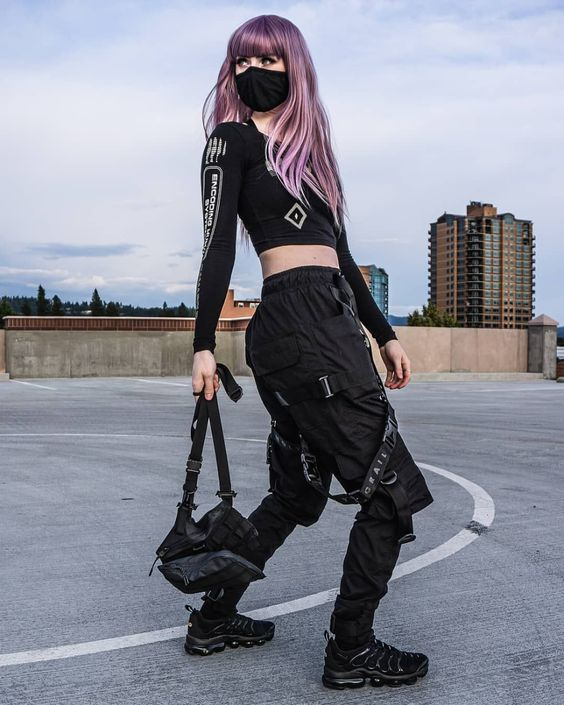
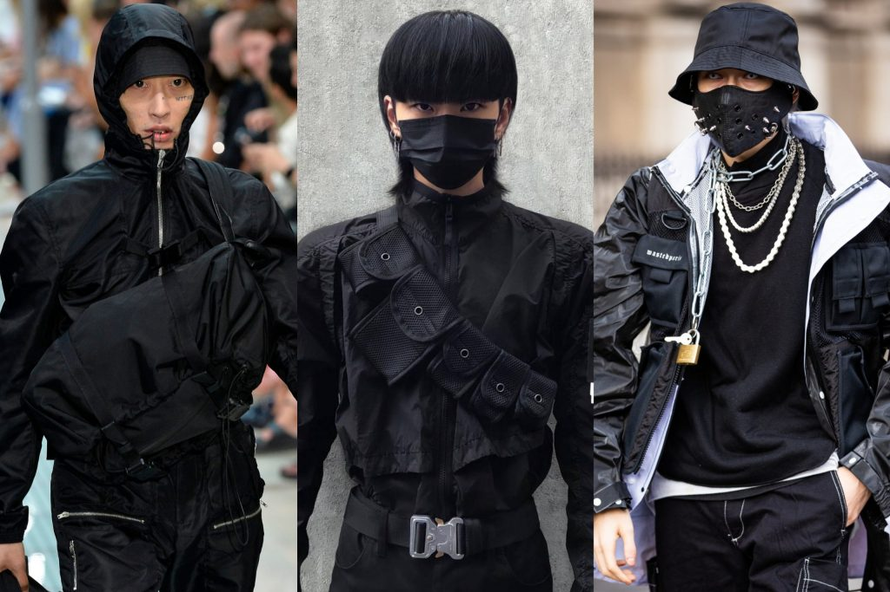
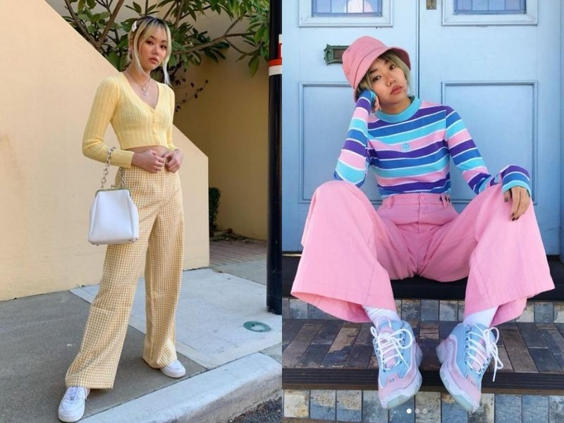
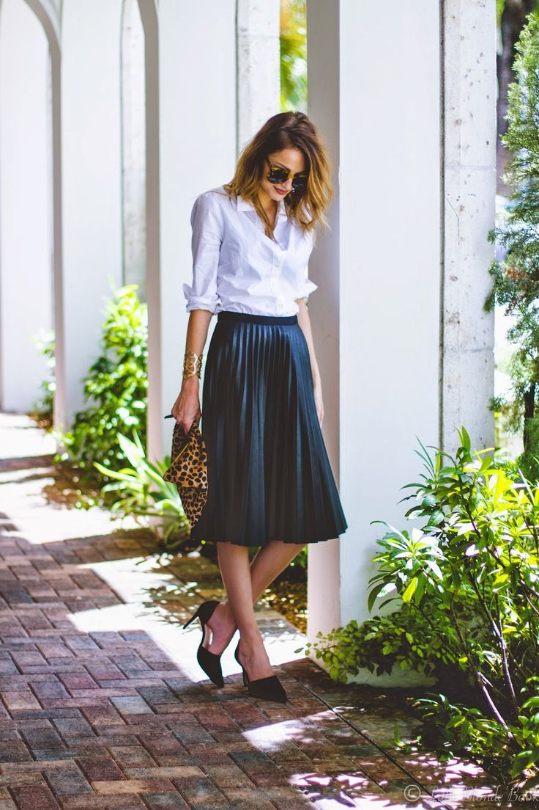
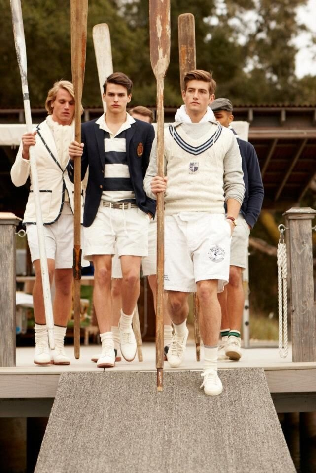
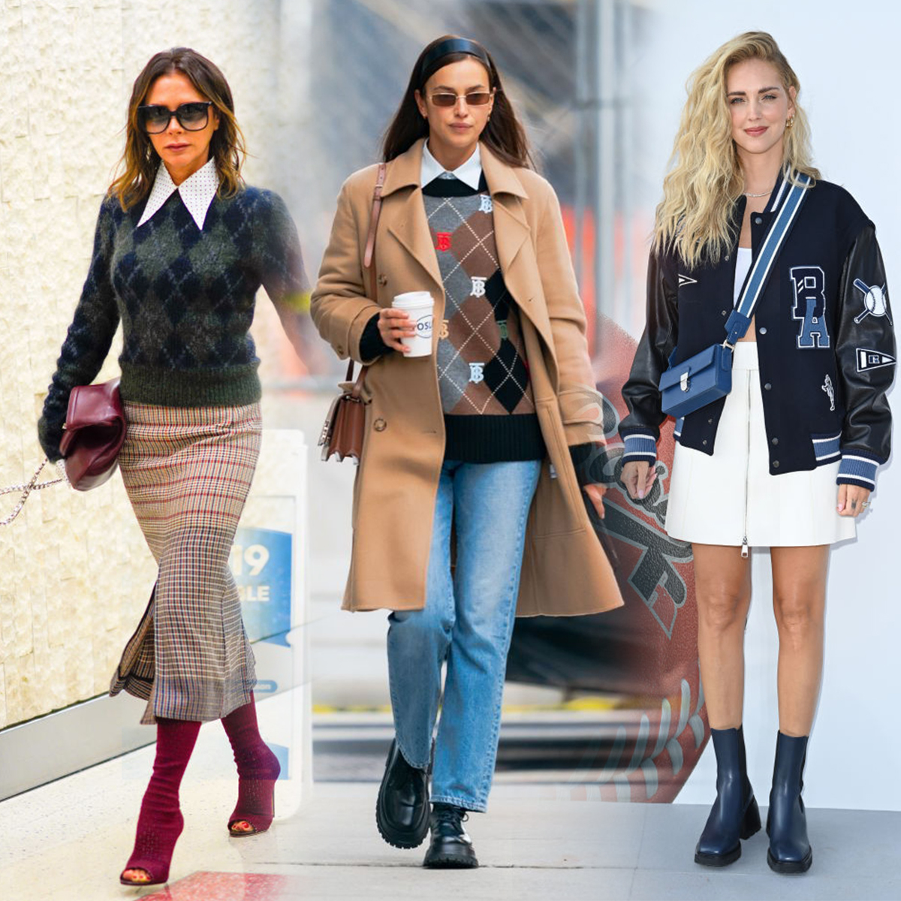
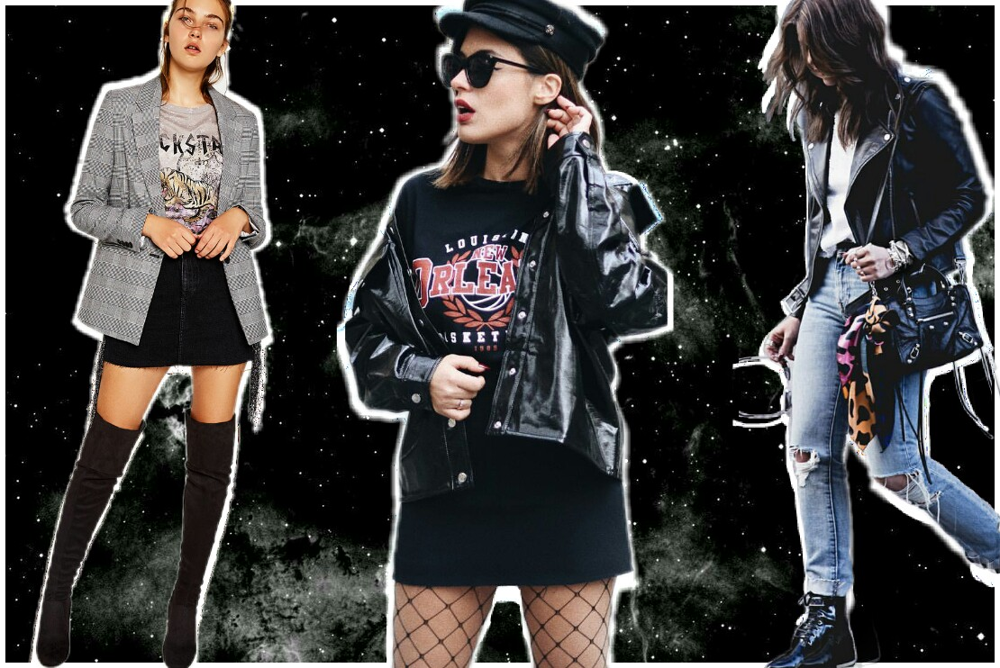
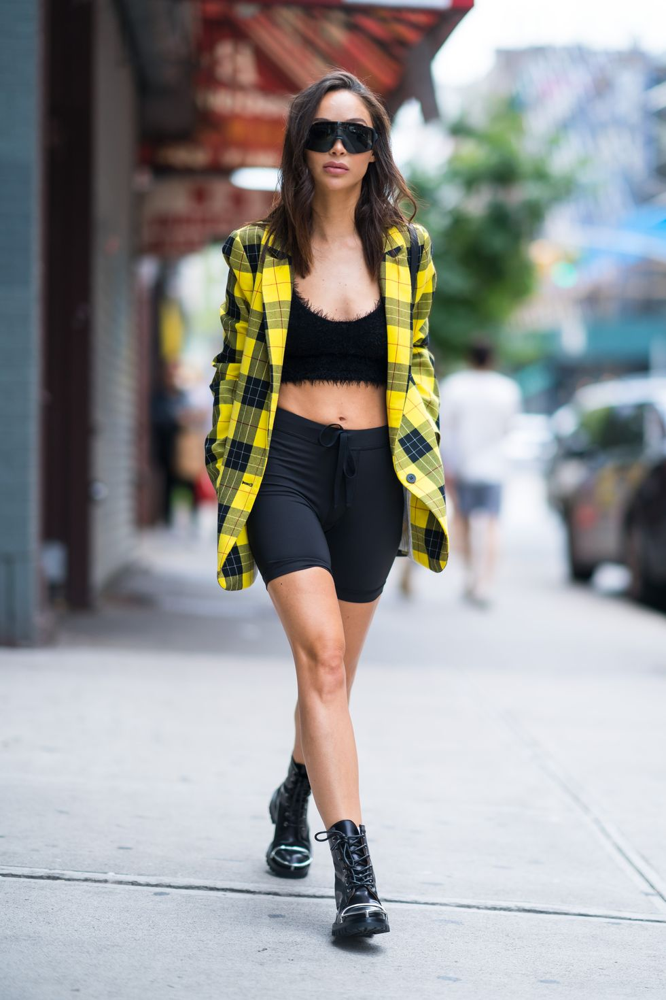
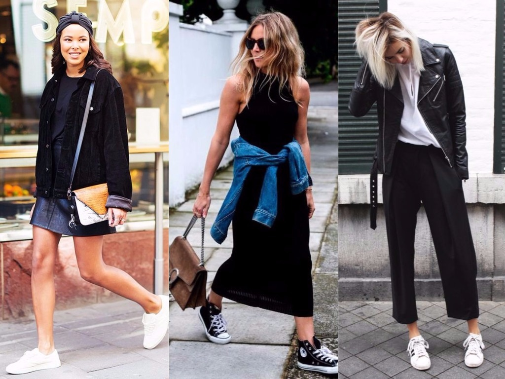
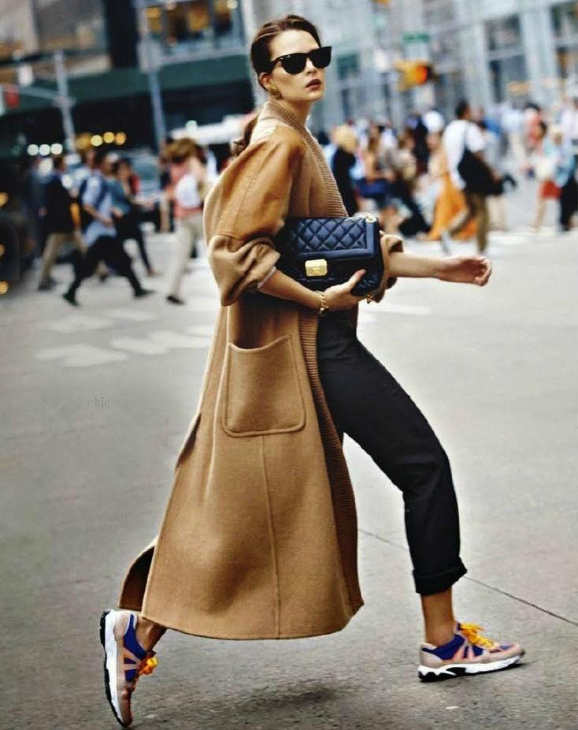

techwear

El futuro está alcanzando a la moda y el Techwear es la evidencia máxima de ello. Esta manera de vestir -que la mejor
forma de describirla es como vanguardista- nace en las calles de Japón, las cuales siempre se han caracterizado, no por
seguir tendencias, más bien por crearlas.
El 'teachwear' es una moda que se caracteriza por combinar la comodidad, la tecnología en textiles y el diseño futurista
para crear prendas funcionales para la vida diaria pero con un toque dramático y apocalíptico.
La ropa esta hecha de textiles ligeros pero resistentes que le brindan protección al cuerpo, es a prueba de agua y con cierta durabilidad. Los arneses, bolsillos, broches y cierres son el detalle final.
  El principal diferenciador de estas prendas son los materiales que se ocupan para su desarrollo. Muchas de las marcas le
dan una gran importancia a la selección de sus materias primas, en este caso los textiles, los cuales deben cumplir
con ciertas características como lo son: Durabilidad, ligereza, resistencia al agua, entre otras que se adapten al fin
de la
tendencia: ser multifuncional.
De igual manera se le pone gran atención al uso de elementos utilitarios ya vistos en
otras prendas, en este tipo de indumentaria: Cierres, ganchos, ojillos metálicos, broches o cintas.
soft girl

Soft girl quiere decir chica suave.
UrbanDictionary la define así: "una soft girl es alguien que ama los clips y las bandas en el cabello, los collares
bonitos y los duraznos. Maquillaje -aman usar rubor (usualmente rosa o color durazno). Son adictas al gloss y aman
pintar corazones y nubes en sus mejillas. El iluminador es importante si quieres ser una soft girl (usualmente blanco,
rosa o durazno)".
Otras definiciones aseguran que les encanta usar ropa femenina, en colores pastel, usar tenis con faldas y vestidos, y
por supuesto, aman Instagram y TikTok.
Según los expertos en moda, si quieres ser una verdadera soft girl es importantísimo que ames el iluminador. Acuérdate
cómo dice la canción ‘estoy brillando con highlighter’.

Su estilo es muy soñador, mezcla cosas de infancia como overoles y coletas con maquillaje y otros estilos más adultos.
Además, están acostumbradas a combinar sus atuendos con tenis, de preferencia, de colores claros.
clasico casual

La presencia de ropa elegante y de alta calidad es lo que más caracteriza al estilo clásico. Los pantalones rectos también son muy recurrentes, al igual que la creación de siluetas equilibradas a través de la combinación de prendas.
El estilo clásico no es:
- Llevar volantes y adornos muy exagerados.
- Vestir colores llamativos.
- Abusar de los maxi estampados.
El estilo clásico transmite romanticismo y sofisticación mediante unos conjuntos donde prevalecen los colores neutros
como el negro, el blanco, el gris o el beige.
El estilo clásico es:
- Vestir prendas de calidad.
- Darle presencia de colores neutros y armoniosos.
- Elegir prendas rectas para generar cortes rectos.
Los looks clásicos proyectan una gran madurez y seguridad, por eso, muchas personas no le dan una oportunidad a este estilo al considerarlo un tanto aburrido. Pero nada más lejos de la realidad. El estilo clásico no es sinónimo de antiguo, todo lo contrario, y en este artículo te lo vamos a demostrar.
academia o preppy

El estilo preppy o academia es característico por sus siluetas estructuradas, colores pastel, prendas básicas, estampados de cuadros y bordados. La palabra preppy proviene de las universidades más influyentes de la costa este Estadounidense. La mayoría de los jóvenes de clase alta americana, antes de ingresar en las prestigiosas universidades del Ivy League, acudían a unos cursos previos llamados: preparatory courses.
Estos jóvenes fueron los creadores de este estilo, queriendo alejarse del estilo clásico de sus padres y dándole a giro a sus uniformes de colegio. Un estilo que dio un giro atrevido y divertido que a día de hoy.
Origen del estilo preppy: Preparatory Schools (EE. UU.)
En los años veinte, las mejores escuelas del país formaban a los hijos de las familias adineradas. Estas instituciones
se inspiraban en los códigos de vestimenta de la tradición inglesa e incorporaban uniformes con escudos y colores
concretos. Después de la escuela y la universidad, los antiguos alumnos seguían vistiendo ropa estilo preppy.
En los cincuenta, el estilo preppy en la moda define el estilo de vida americano y es sinónimo de éxito. Entonces,
surgieron marcas como Brooks Brothers, Ralph Lauren y Tommy Hilfiger. Poco a poco, se convirtió en una tendencia
mundial.
rock

La moda se ve influida siempre por la vida, el arte y la música. El rock ha traspasado el nivel de fenómeno musical para
convertirse en actitud y fenómeno estilístico.
Sin duda, dentro de la estética del rock, nuestra mayor referente es la modelo británica Kate Moss. Todos sus looks
representan un estilo relajado pero con un punto chic que la han convertido en icono de moda. En su día a día, es
habitual verla con bikers, abrigos animal print, skinny jeans negros, sombrero y maxi gafas.
El estilo rockero rompe por completo con la estética clásica y combina prendas atrevidas y urbanas como pantalones pitillo, prendas de cuero, tachuelas, lentejuelas, botas militares, sombreros trendy, gafas de aviador, etc.

El rock nació en los años 50 en Estados Unidos. Alude a un estilo de música concreto, con Elvis Presley como icono.
Elvis convirtió el rock en tendencia llegando a cambiar el vestuario de la época y poniendo de moda el estilo rockero.
Pantalones acampanados, bikers y camisas ajustadas aterrizaron en la pista y en el street style (casi) a partes iguales.
Sporty chic

El sporty chic, tiene como significado en español “deportivo” y “elegante”, es una tendencia que combina las prendas deportivas con un toque de glamour. Con esta moda no tienes que dejar a un lado la comodidad para lucir elegante y con lo más cool del momento.
Es importante conocer algunas claves sobre cómo vestir un look de sport elegante. En ocasiones, muchas personas confunden esta tendencia, es esencial no confundir lo informal con lo descuidado. Esta moda es lo mejor de los dos mundos: la elegancia y la comodidad.
Es el estilo más utilizado por las mujeres hoy en día, incluso por los hombres, es conocido popularmente como “arreglado pero informal”. Los Sporty Outfits son la mezcla perfecta entre las prendas formales y las informales. Ahí está la clave, en el equilibrio entre ambas. Esta moda consiste en incorporar elementos o accesorios deportivos a un look habitual, priorizar la comodidad mientras luces espectacular. Desde añadir unos tenis a un vestido hasta un pantalón de chándal con unos tacones.

Antes de conocer las claves para vestir esta moda es importante conocer las reglas básicas que no pueden faltar para
llevarlo con mucho estilo.
Una prenda deportiva por look. La prenda deportiva pretende conseguir un toque desenfadado con cualquier outfit, la base es que el resto del conjunto sea el protagonista. No tengas miedo a utilizar prendas demasiado formales. Puedes utilizar todo tipo de prendas formales, desde blazers, vestidos o incluso trajes de pantalón.
